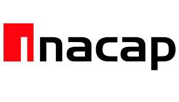
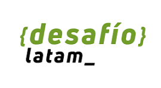
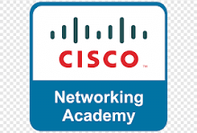

Mi rol
Definí la estructura de contenido, el tono visual, la interacción de la navegación y la forma de destacar proyectos, experiencia y certificaciones en una sola experiencia consistente.
Desarrollador Full Stack, Mobile & UI/UX

Soy un desarrollador de software con amplia experiencia creando soluciones tecnológicas orientadas a la agroindustria. Durante más de una década he trabajado directamente con procesos productivos del rubro, desarrollando herramientas a medida que mejoran la eficiencia, trazabilidad y control operacional en entornos exigentes. Me interesa aplicar la tecnología de forma práctica, resolviendo necesidades concretas del sector. En los últimos años he ampliado mis conocimientos hacia áreas como visión computacional e inteligencia artificial, con el objetivo de seguir aportando innovación al mundo agrícola.
HTML, CSS, JavaScript
Portafolio personal diseñado y desarrollado por mí, con foco en jerarquía visual, legibilidad y una experiencia bilingüe clara para presentar mi trabajo técnico y mi criterio UI/UX.
Ver en GitHubC#, .NET Core, Entity Framework
Desarrollo de una API RESTful utilizando .NET Core, implementando arquitectura limpia y patrones de diseño.
Ver en GitHubTypeScript, Zustand
Curso práctico sobre gestión de estado con Zustand, compartiendo conocimiento y buenas prácticas.
Ver en GitHubPython, OpenCV
Proyecto de visión por computador utilizando Python y OpenCV para procesamiento de imágenes.
Ver en GitHubDart, Flutter
Aplicación multiplataforma desarrollada con Flutter para gestión de reclamos.
Ver en GitHub| 2007 - 2011 |
Ingeniería en Informática INACAP, Puerto Montt |
 |
| 2022 - 2023 |
Diplomado en Python Profesional Pontificia Universidad Católica de Chile |
|
| 2015 |
Postítulo Desarrollo de Aplicaciones Móviles INACAP, Santiago |
| 2024 |
Desarrollo Frontend con React Desafío Latam |
 |
| 2023 |
Bootcamp Desarrollo de Aplicaciones Móviles con
Flutter Universidad del Desarrollo (UDD) |
|
| 2023 |
Herramientas para la gestión de proyectos aplicando
metodologías Ágiles y Lean Pontificia Universidad Católica de Chile |
|
| 2021 |
Herramientas avanzadas de programación en Python para
procesamiento de datos Pontificia Universidad Católica de Chile |
|
| 2021 |
IoT Fundamentals: Big Data & Analytics Cisco Networking Academy |
 |
| 2020 |
Programming Essentials in Python Cisco Networking Academy |
|
| 2019 |
Herramientas de programación en Python para procesamiento de
datos Pontificia Universidad Católica de Chile |
|
| 2019 |
Introducción a Data Science: Programación Estadística con
R Universidad Nacional Autónoma de México |
|
| 2018 |
Data Management and Analytics BSG Institute • Curso 20466: Implementando Data Models e Informes con Microsoft SQLServer • Curso 20467: Diseño de Soluciones BI con Microsoft SQLServer 2014 |
|
| 2014 |
Curso de Seguridad Informática Avanzada - Cisco CCNA
Security Tecnológico de Monterrey |
Microsoft
Octubre 2020
Microsoft
Enero 2021
CertiProf
Agosto 2020
Empresa:
Exportadora Anakena Ltda.
Ubicación: Paine, Chile
Fecha: Octubre 2015 - Actualidad
Descripción: Desarrollo de aplicaciones empresariales utilizando C# y .NET Core, implementando arquitecturas limpias y patrones de diseño. Experiencia en desarrollo de APIs RESTful con ASP.NET Core y Entity Framework. Desarrollo de aplicaciones móviles multiplataforma con Flutter para la gestión de procesos internos. Implementación de soluciones de Business Intelligence con Power BI y SQL Server.
Empresa:
Exportadora San Alberto S.A.
Fecha: Junio 2012 - Octubre 2015
Descripción: Desarrollo de aplicaciones web y sistemas de gestión empresarial. Implementación de soluciones de software para optimizar procesos internos. Trabajo en equipo con otros desarrolladores y departamentos de la empresa. Desarrollo de interfaces de usuario y backend utilizando tecnologías .NET y SQL Server.